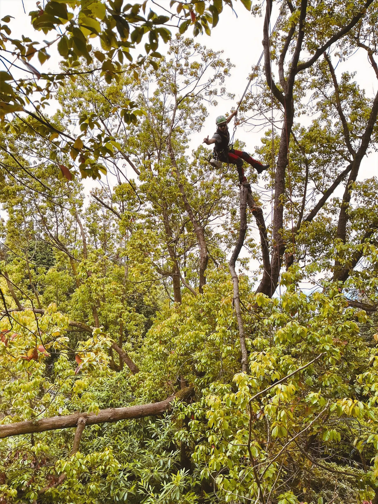
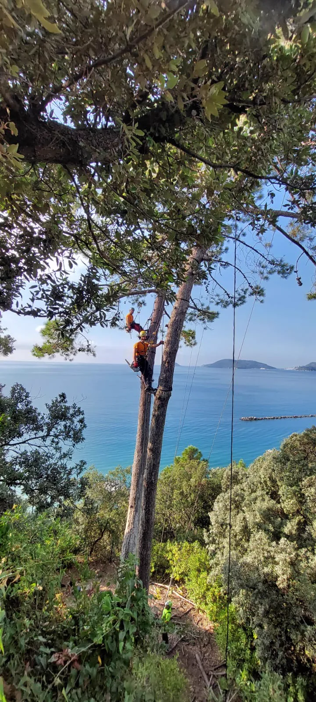
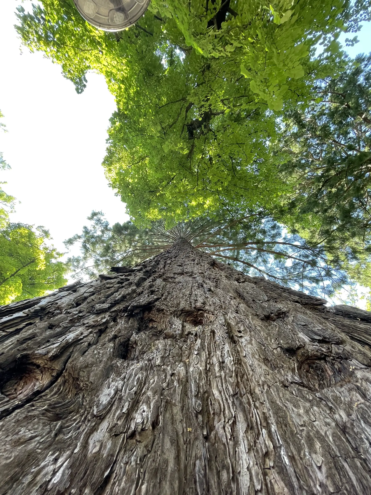
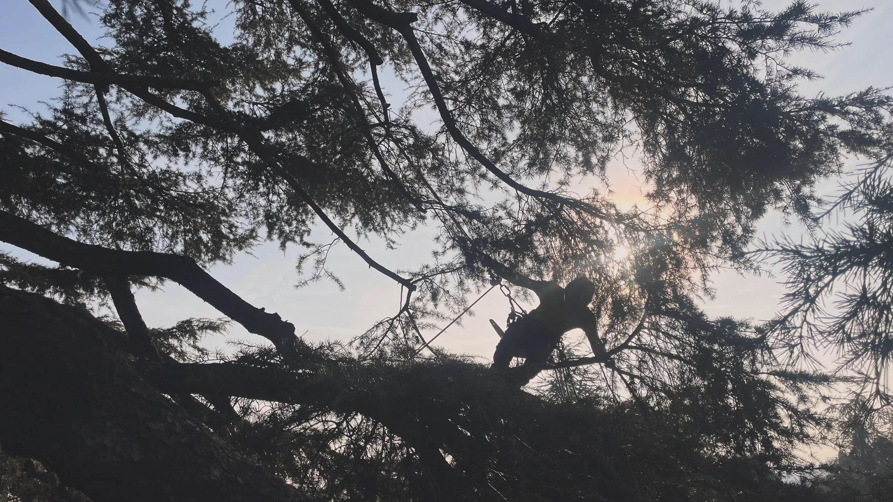
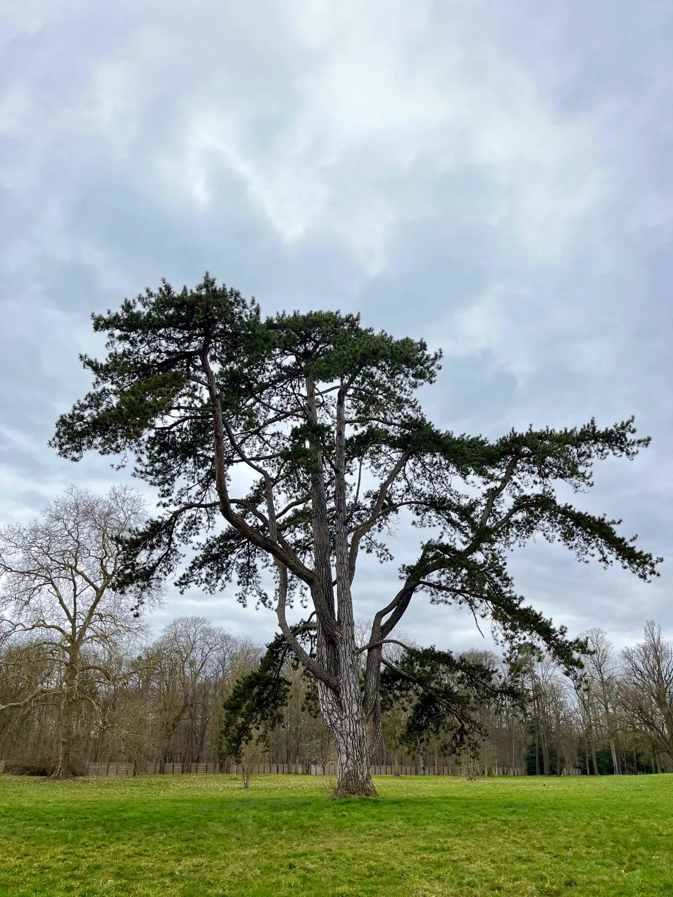
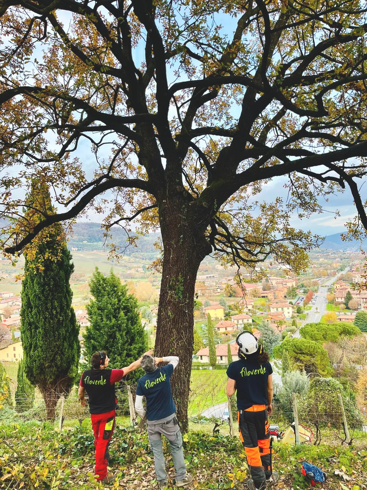

Potatura e consolidamento alberature ad alto fusto
Una potatura ben eseguita ha l’obiettivo di preservare la forma naturale della pianta, salvaguardandone la salute e andando a ridurre al minimo gli interventi invasivi.
Abbattimento e potatura di alberi ad alto fusto con accesso e posizionamento mediante funi.
Quando serve
Il treeclimbing è una tecnica professionale di arrampicata sugli alberi utilizzata per la potatura, la manutenzione e la cura di esemplari di grandi dimensioni.
A differenza dei metodi tradizionali, questa tecnica consente agli operatori di lavorare direttamente all’interno della chioma, garantendo interventi più precisi, mirati e rispettosi della struttura e della fisiologia dell’albero. È particolarmente indicata per alberi situati in contesti difficili da raggiungere, dove l’uso di piattaforme aeree risulterebbe complicato o invasivo.
Grazie all’impiego di corde, imbragature e dispositivi di sicurezza, gli operatori possono muoversi agevolmente e in totale sicurezza su ogni parte dell’albero, riducendo al minimo l’impatto ambientale e ottenendo risultati di alta qualità nella gestione del verde.
Prati, aiuole, cordoli e pavimentazioni restano intatti: l’operatore sale sull’albero, non il cestello.
Si raggiungono rami e branche che dal cestello resterebbero fuori portata, con tagli più precisi e meno invasivi.
Cortili condominiali, giardini chiusi, aree urbane con poco spazio di manovra e vincoli di accesso.
Attività su fune eseguita da personale qualificato con attrezzature certificate, nel rispetto della normativa sulla sicurezza nei lavori in quota.
Interventi

Una potatura ben eseguita ha l’obiettivo di preservare la forma naturale della pianta, salvaguardandone la salute e andando a ridurre al minimo gli interventi invasivi.

L’abbattimento controllato permette di smontare l’albero in sezioni gestibili, riducendo al minimo il rischio di danni.

La fresatura dei ceppi è un intervento specialistico che permette di rimuovere in modo efficace e sicuro le ceppaie degli alberi abbattuti.
Come si svolge un intervento
Stato fitosanitario e strutturale dell’albero, vincoli del sito, bersagli presenti, accessi disponibili.
Tecnica di intervento, periodo più adatto dell’anno, tempi, eventuali autorizzazioni e comunicazioni ai residenti.
Delimitazione dell’area, protezione di pavimentazioni e arredi, verifica delle attrezzature.
Salita su fune, esecuzione dei tagli, calata controllata del materiale.
Cippatura o allontanamento del materiale di risulta e smaltimento secondo le normative vigenti.
Interventi recenti
Selezione provvisoria dalle immagini del sito attuale. In attesa del materiale fotografico definitivo del cliente.







Mandaci una foto e la posizione: ti diciamo se serve un intervento e di che tipo.